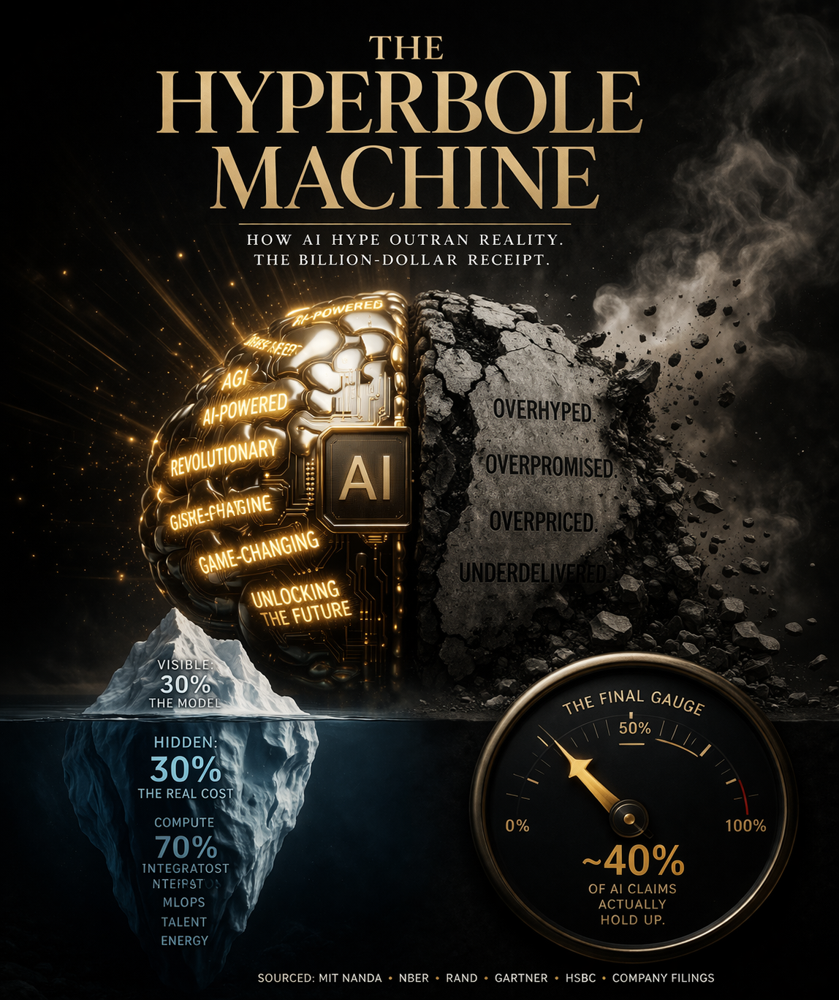

$684 billion spent. 80% failed. Zero accountability.
A forensic visual guide to everything AI promised — and didn't deliver.
These aren't projections. These are real dollars, burned by real companies, with real shareholders watching. The AI gold rush has its own body count — measured in billions.
OpenAI had a 10% gross profit margin in 2024. Saudi Aramco — the comparison for its $40 billion funding round — has a business model and profitability. OpenAI has neither.
Every hype cycle manufactures its own language. This one is no different. Here's the field guide: what's real technology, what's marketing jargon, what's pure hype, and what's a genuine paradox the industry refuses to discuss.
Real companies. Real budgets. Real wreckage. These aren't startups that failed to find product-market fit. These are household names that burned billions on AI and software ambitions that never materialized.
The AI industry runs on contradictions it refuses to acknowledge. Each one is a load-bearing wall of the hype machine. Pull any one out and the narrative collapses.
What they say in the pitch deck versus what it actually means in production.
Data from RAND Corporation, MIT Sloan, McKinsey, and Deloitte across 2,400+ enterprise AI initiatives. The failure isn't a bug. It's the feature.
What sinks budgets is everything beneath the waterline. Enterprise AI adoption routinely runs 3–5× over initial estimates. Gartner found CFO cost estimates off by 500–1,000%.
Not everything is hype. AI does real things for real companies. But only when you match the right tool to the right problem — and stop expecting magic.
The firms that will actually benefit are the ones doing the unglamorous work now: cleaning data, redesigning workflows, retraining people, and measuring what's real instead of what's pitched.